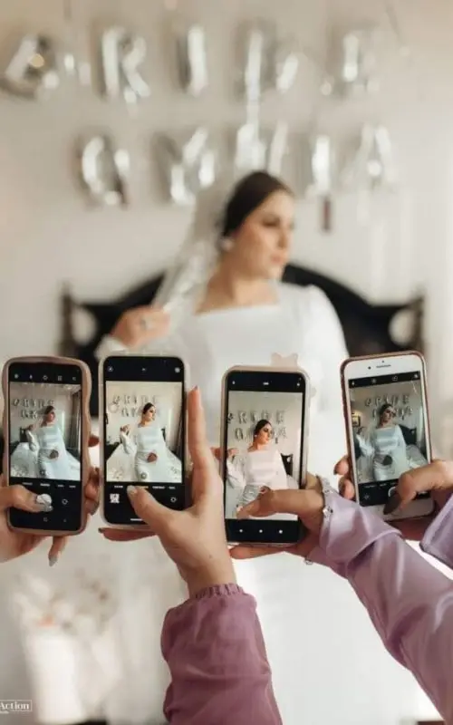
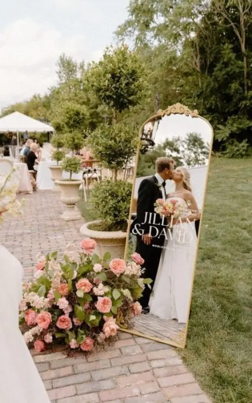
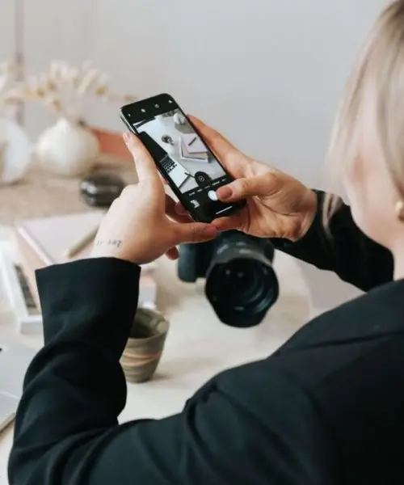
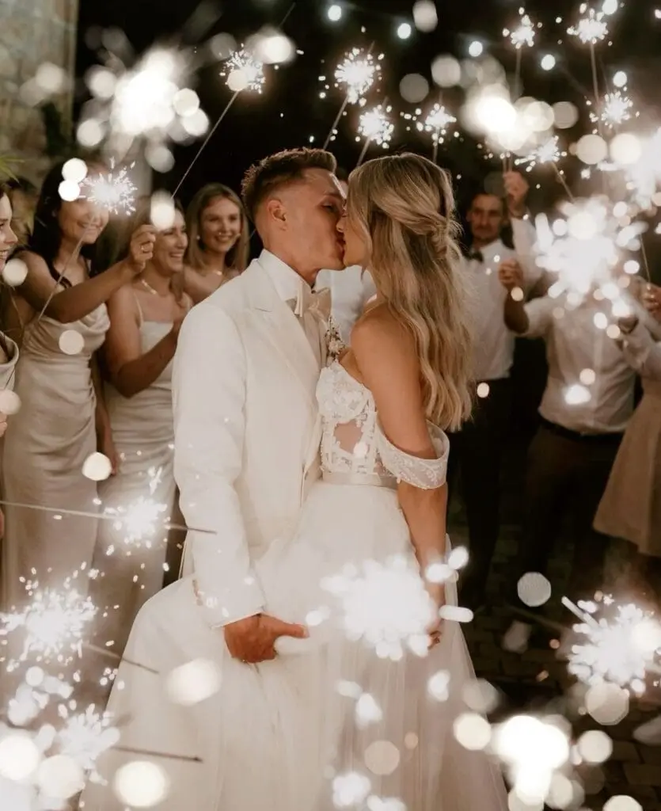
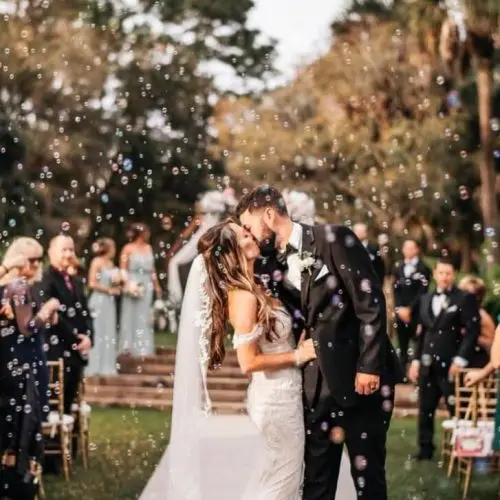
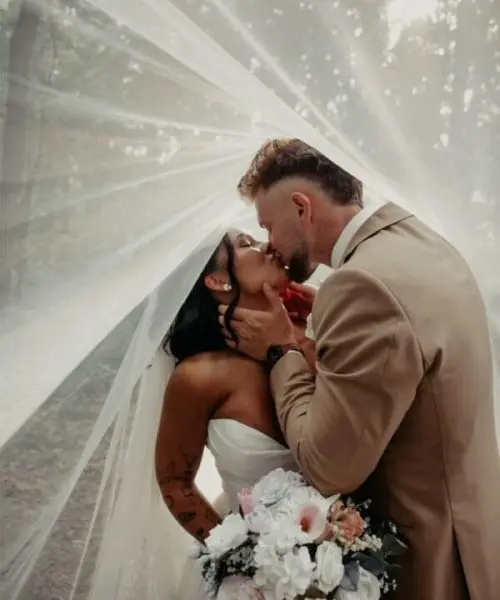

The wedding content creator, the trendy wedding supplier of 2026, captures authentic memories and instant videos ready to share on social media.
The wedding world never stops evolving. Every year, new ideas, new concepts and new suppliers come along to enrich couples' experience. Remember the boom in symbolic ceremonies, the arrival of food trucks or personalised cocktail bars? Well, in 2026 the big novelty is the wedding content creator.
This trendy wedding supplier is changing the way couples live and share their day. And if you think this role overlaps with the photographer or videographer, think again: their approach is completely different.
In this article, I'll explain what a wedding content creator is, why they are becoming essential, what they actually do on the day, their advantages and, above all, how to choose the right one.
What is a wedding content creator?

A wedding content creator is a professional who captures your wedding with… their smartphone. Yes, no bulky DSLR or heavy camera: just a high-end phone, sometimes with accessories such as a stabiliser or a lavalier mic.
Their role is very clear:
Create authentic content (stories, reels, fun videos).
Capture the behind-the-scenes and spontaneous moments that the photographer doesn't always focus on.
Produce instant wedding content, ready to share on Instagram, TikTok or WhatsApp.
Deliver wedding memories within 24 hours (and sometimes the same evening).
In short, they are your supplier dedicated to the instant, the raw and the real.
Wedding content creator, photographer or videographer: what's the difference?
The question comes up every time: why pay for a wedding content creator when I already have a photographer and a videographer?
👉 Because their roles are complementary, not competing.
The photographer elevates every moment, creating artistic, timeless images.
The videographer tells a story in pictures, with a cinematic result worthy of a film.
The wedding content creator captures the present moment, the raw emotions, and delivers fast, fun content.
Whereas the photographer and videographer will deliver their work within weeks or even months, the wedding content creator gives you stories and videos as early as the next day.
Put simply: photographer = art, videographer = storytelling, wedding content creator = immediacy.


Why is the wedding content creator the wedding trend of 2026?
We live in an age where everything is shared. Instagram, TikTok, Snapchat… Couples love showing their happiness, involving their loved ones and reliving the highlights of their wedding straight away.
The problem is that on the day, nobody really has time to get their phone out. Your witnesses and guests would rather enjoy the party. And if you hand the "film for social media" job to your cousin, you risk ending up with:
blurry videos,
haphazard framing,
and incomplete memories.
This is exactly where the wedding content creator comes in. They know the codes of social media, how to film vertically, catch the right light and choose the right angles. The result: professional-quality wedding stories and reels you can post immediately.
In 2026, with couples ever more connected, instant wedding content is becoming a must.
What does a wedding content creator actually do on the day?
This supplier's role is simple: to follow you throughout your day without being intrusive. Here are a few examples:
Getting ready: videos of your make-up, getting dressed, shared laughter with your witnesses.
Ceremony: mini clips of your entrance, the looks you exchange, discreet tears among the guests.
Drinks reception: a relaxed atmosphere, guests raising a glass, decor details, entertainment.
Evening: dances, speeches, surprises, fits of laughter… all the energy of the party.
At the end, you leave with a "best of" in wedding reel format, plus lots of short videos ready to share.
An anecdote: the witnesses' surprise
At a wedding last summer, the couple had chosen a wedding content creator. During the evening, their witnesses had prepared a surprise dance. The result: the next day, the couple received a 30-second express edit. They posted it straight away on Instagram.
The reel took off: hundreds of likes, enthusiastic comments and, above all, loved ones who couldn't attend were able to live the moment as if they had been there.
That is exactly the strength of a wedding content creator: they bring your wedding to life beyond the day itself.
The advantages of a content creator for your wedding
Hiring a wedding content creator has many advantages:
- Speed: memories delivered within 24 hours.
- Authenticity: spontaneous, natural videos, with no forced poses.
- Complementarity: they don't replace the photographer or videographer, they complement them.
- Fun: behind-the-scenes moments, laughter, "backstage" instants.
- Sharing: you can show your wedding to loved ones who live far away or couldn't come.
Is it really worth it?
Yes, it is an extra cost. But think of the benefits:
No more waiting several months to relive your wedding.
Ready-to-use wedding social media content.
"Living" memories that complement your photo album.
If you are a connected couple, active on Instagram or TikTok, the wedding content creator becomes an indispensable ally.

Is it for everyone?
Not necessarily.
If you never use social media, it isn't a priority.
If you love quick, fun, raw videos, you will adore it.
If you are an influencer, entrepreneur or content creator, it is an absolute must.
Mistakes to avoid
Thinking they replace the photographer or videographer. Wrong: they are complementary.
Choosing on price alone, without looking at their style.
Not planning in advance the important moments to film.


How to choose the right wedding content creator
1. Check their style
Every creator has their own touch. Look at their reels, stories and edits.
2. Ask how quickly they deliver
Some deliver the same evening, others within 48 hours.
3. Clarify their equipment
Even if they work with a smartphone, they may use a stabiliser, a microphone or a small light.
4. Talk through your schedule
Explain the key moments not to miss (entrance, speeches, surprises).
5. Check they get on with the other suppliers
A smooth wedding relies on good collaboration between the photographer, videographer and content creator.
In short
The wedding content creator is the trendy wedding supplier of 2025 par excellence. They capture authentic memories, deliver instant videos and let couples share their day as early as the next morning.
Complementing the photographer and videographer, they are becoming a key player in the modern wedding experience. Mark my words: in a few years, we won't be able to imagine a wedding without its wedding content creator. 😉
Lovely Day Event offers several services
Wedding planning
I step in at every stage of your preparations and guide you through your choices, bringing ideas and suggestions so that your wedding looks like no one but you.
Wedding design
Creative and passionate, I am a certified Wedding Designer and I create a scenographic atmosphere that matches the theme of your wedding.
On-the-day coordination
I will be the conductor of your day, managing the suppliers, the set-up of your decor and the smooth running of this beautiful day.